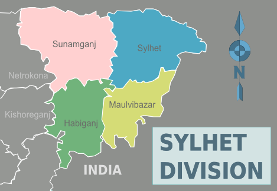

সিলেট: ১৯৭১ খ্রিস্টাব্দে বাংলাদেশ স্বাধীন হওয়ার পূর্ব থেকেই (অর্থাৎ পাকিস্তান আমল থেকেই) সাবেক সিলেট জেলা ছিল চট্টগ্রাম বিভাগের অন্তর্গত। পরবর্তীকালে সরকারের প্রশাসনিক পুনর্বিন্যাস কার্যক্রমের সূত্রে ১৯৯৫ খ্রিস্টাব্দের ১ আগস্ট চারটি জেলা নিয়ে বাংলাদেশের ষষ্ঠ বিভাগ সিলেট গঠিত হয়।[২] এই বিভাগের মোট আয়তন ১২,৫৯৫.৯৫ বর্গ কিলোমিটার[৩][৪] সিলেট বিভাগ শিল্পদ্রব্য (সার, সিমেন্ট, সিলেট পাল্পস এন্ড পেপার মিলস,ছাতক, বিদ্যুৎ), প্রাকৃতিক সম্পদ, খনিজ সম্পদ (গ্যাস, তেল, পাথর, চুনাপাথর) ইত্যাদিতে ভরপুর। বাংলাদেশের অর্থনীতিতে এ বিভাগের ভূমিকা অপরিসীম